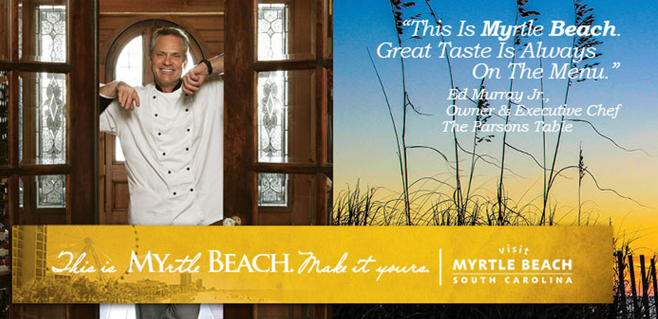

Throughout the development of the menus of The Parson's Table we strive to provide you, our guests, with the finest and freshest ingredients nature offers. We also want to do our part to protect the environment
by working with sustainable, organic suppliers both locally and throughout the country.